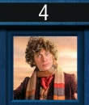
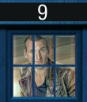
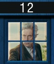
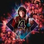
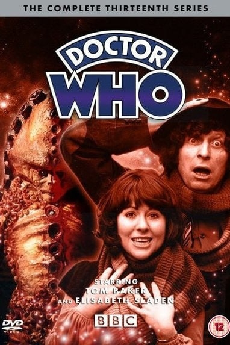
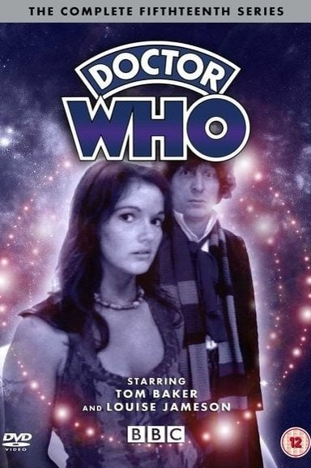
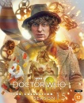
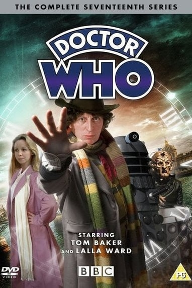
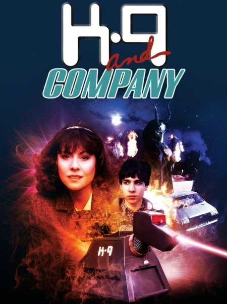

Таблица коллекции |  Навигация по канону |  Связные экранизации |
Таблица коллекции | Навигация по канону | Связные экранизации |












Эра Четвертого Доктора
Актёр: Том Бейкер

Четвёртый Доктор, Сара Джейн и Гарри Салливан сталкиваются с гигантским роботом, сонтаранцами, киберлюдьми; кульминация — «Происхождение далеков» с Давросом: Доктор стоит перед выбором, уничтожить ли расу далеков в зародыше. Сезон задаёт масштаб новой эры — и моральные границы путешествий во времени.
Варианты озвучек, подробности выхода и другие ссылки на просмотр в описаниях серийНаш плейлист сезона в ВК
Таблица сезонов и озвучек


Четвёртый Доктор и Сара Джейн сталкиваются с зайгонами, Сутехом, андроидами и Морбиусом; сезон выдержан в готической, почти хоррор‑эстетике, а «Мозг Морбиуса» ставит под сомнение саму природу Доктора — и расширяет мифологию сериала.
Варианты озвучек, подробности выхода и другие ссылки на просмотр в описаниях серий

Четвёртый Доктор и Сара Джейн сталкиваются с разумной энергией Мандрагоры, Мастером и древними тайнами; кульминация — «Беспощадный убийца», где Доктор оказывается на суде Повелителей Времени. Сезон знаменует прощание с Сарой Джейн и усиливает тему ответственности Доктора за каждое вмешательство.
Варианты озвучек, подробности выхода и другие ссылки на просмотр в описаниях серий


Четвёртый Доктор и Лила сталкиваются с Фендалом, космическим вирусом и угнетённой цивилизацией; появляется K‑9. Сезон смешивает научную фантастику с мистикой, а финал («Временное вторжение») раскрывает масштаб интриг Повелителей Времени — и цену их вмешательства в судьбы галактик.
Варианты озвучек, подробности выхода и другие ссылки на просмотр в описаниях серий

Четвёртый Доктор и новая спутница Романа (плюс K‑9) по поручению Белого Стража собирают шесть фрагментов Ключа Времени — артефакта, удерживающего равновесие вселенной. На пути — Рибос, пираты, друиды, андроиды и гигантский кальмар Кролл; в финале Чёрный Страж пытается завладеть Ключом, но Доктор срывает его планы. Сезон превращает «Доктора Кто» в квест‑арку с единой линией — и задаёт новый масштаб историй.
Варианты озвучек, подробности выхода и другие ссылки на просмотр в описаниях серий


Четвёртый Доктор и Романа (плюс K‑9) сталкиваются с далеками и Давросом, попадают в изысканную интригу в Париже, исследуют планету Хлорис и сражаются с Наймоном. Сезон балансирует между масштабной фантастикой и тонкой сатирой, а незавершённая «Шада» стала культовым «призраком» эпохи — намеком на то, как могли бы развиваться истории, если бы не внешние обстоятельства.
Варианты озвучек, подробности выхода и другие ссылки на просмотр в описаниях серий

Четвёртый Доктор, Романа и K‑9 сталкиваются с тайнами Улья Досуга, загадочным Меглосом и попадают в E‑пространство — там появляются Адрик и Нисса, а Романа с K‑9 уходят. В «Хранителе Тракена» возвращается Мастер, а финал — «Логополис»: Доктор спасает вселенную ценой собственной регенерации. Сезон подводит черту под эрой Тома Бейкера и задаёт старт новой главе.
Варианты озвучек, подробности выхода и другие ссылки на просмотр в описаниях серий

Сара Джейн Смит и робот‑пёс К‑9 расследуют странные события в английской деревне — пропажу людей, культ и загадочную коробку. Эпизод пытался соединить детектив, мистику и научную фантастику для семейной аудитории, но сериал не продлили — зато эта история позже укрепила образ Сары Джейн как самостоятельной героини.